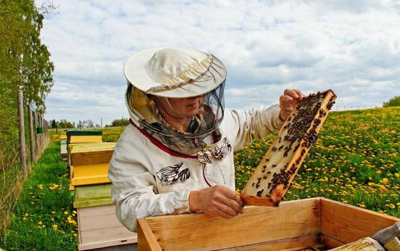

Honey bees in trouble
Can native pollinators fill the gap?
A Recently, ominous headlines have described a mysterious ailment, colony collapse disorder(CCD)，that is wiping out the honeybees that pollinate many crops. Without honeybees, the story goes, fields will be sterile, economies will collapse, and food will be scarce.
B But what few accounts acknowledge is that what’s at risk is not itself a natural state of affairs. For one thing, in the United States, where CCD was first reported and has had its greatest impacts, honeybees are not a native species. Pollination in modem agriculture isn’t alchemy, it’s industry. The total number of hives involved in the U.S. pollination industry has been somewhere between 2.5 million and 3 million in recent years. Meanwhile, American farmers began using large quantities of organophosphate insecticides, planted large-scale crop monocultures, and adopted “clean farming” practices that scrubbed native vegetation from field margins and roadsides. These practices killed many native bees outright—they’re as vulnerable to insecticides as any agricultural pest—and made the agricultural landscape inhospitable to those that remained. Concern about these practices and their effects on pollinators isn’t new—in her 1962 ecological alarm cry Silent Spring, Rachel Carson warned of a ‘Fruitless Fall’ that could result from the disappearance of insect pollinators.
C If that ‘Fruitless Fall, has not—yet—occurred, it may be largely thanks to the honeybee, which farmers turned to as the ability of wild pollinators to service crops declined. The honeybee has been semi-domesticated since the time of the ancient Egyptians, but it wasn’t just familiarity that determined this choice: the bees’ biology is in many ways suited to the kind of agricultural system that was emerging. For example, honeybee hives can be closed up and moved out of the way when pesticides are applied to a field. The bees are generalist pollinators, so they can be used to pollinate many different crops. And although they are not the most efficient pollinator of every crop, honeybees have strength in numbers, with 20,000 to 100,000 bees living in a single hive. “Without a doubt, if there was one bee you wanted for agriculture, it would be the honeybee, “says Jim Cane, of the U.S. Department of Agriculture. The honeybee, in other words, has become a crucial cog in the modem system of industrial agriculture. That system delivers more food, and more kinds of it, to more places, more cheaply than ever before. But that system is also vulnerable, because making a farm field into the photosynthetic equivalent of a factory floor, and pollination into a series of continent-long assembly lines, also leaches out some of the resilience characteristic of natural ecosystems.
D Breno Freitas, an agronomist, pointed out that in nature such a high degree of specialization usually is a very dangerous game: it works well while all the rest is in equilibrium, but runs quickly to extinction at the least disbalance. In effect, by developing an agricultural system that is heavily reliant on a single pollinator species, we humans have become riskily overspecialized. And when the human-honeybee relationship is disrupted, as it has been by colony collapse disorder, the vulnerability of that agricultural system begins to become clear.
E In fact, a few wild bees are already being successfully managed for crop pollination. “The problem is trying to provide native bees in adequate numbers on a reliable basis in a fairly short number of years in order to service the crop，” Jim Cane says. “You’re talking millions of flowers per acre in a two-to three-week time frame, or less, for a lot of crops.” On the other hand, native bees can be much more efficient pollinators of certain crops than honeybees, so you don’t need as many to do the job. For example, about 750 blue orchard bees (Osmia lignaria) can pollinate a hectare of apples or almonds, a task that would require roughly 50,000 to 150,000 honeybees. There are bee tinkerers engaged in similar work in many comers of the world. In Brazil, Breno Freitas has found that Centris tarsata, the native pollinator of wild cashew, can survive in commercial cashew orchards if growers provide a source of floral oils, such as by interplanting their cashew trees with Caribbean cherry.
F In certain places, native bees may already be doing more than they’re getting credit for. Ecologist Rachael Winfree recently led a team that looked at pollination of four summer crops (tomato, watermelon, peppers, and muskmelon) at 29 farms in the region of New Jersey and Pennsylvania. Winfiree’s team identified 54 species of wild bees that visited these crops, and found that wild bees were the most important pollinators in the system: even though managed honeybees were present on many of the farms, wild bees were responsible for 62 percent of flower visits in the study. In another study focusing specifically on watermelon, Winfree and her colleagues calculated that native bees alone could provide sufficient pollination at 90 percent of the 23 farms studied. By contrast, honeybees alone could provide sufficient pollination at only 78 percent of farms.
G “The region I work in is not typical of the way most food is produced，” Winfree admits. In the Delaware Valley, most farms and farm fields are relatively small, each fanner typically grows a variety of crops, and farms are interspersed with suburbs and other types of land use which means there are opportunities for homeowners to get involved in bee conservation, too. The landscape is a bee-friendly patchwork that provides a variety of nesting habitat and floral resources distributed among different kinds of crops, weedy field margins, fallow fields, suburban neighborhoods, and semi natural habitat like old woodlots, all at a relatively small scale. In other words, ’’pollinator-friendly” farming practices would not only aid pollination of agricultural crops, but also serve as a key element in the over all conservation strategy for wild pollinators, and often aid other wild species as well.
H Of course, not all farmers will be able to implement all of these practices. And researchers are suggesting a shift to a kind of polyglot agricultural system. For some small-scale farms, native bees may indeed be all that’s needed. For larger operations, a suite of managed bees—with honeybees filling the generalist role and other, native bees pollinating specific crops—could be augmented by free pollination services from resurgent wild pollinators. In other words, they’re saying, we still have an opportunity to replace a risky monoculture with something diverse, resilient, and robust.
Questions 1-4
Do the following statements agree with the claims of the writer in Reading Passage?
In boxes 1-4 on your answer sheet, write
Questions 5-9
Choose the correct letter, A,B,C or D.
Write your answers in boxes 5-9 on your answer sheet.
5. The example of the ‘Fruitless Fair underlines the writer’s point about
A needs for using pesticides.
B impacts of losing insect pollinators.
C vulnerabilities of native bees.
D benefits in building more pollination industries.
6. Why can honeybees adapt to the modem agricultural system?
A the honeybees can pollinated more crops efficiently
B The bees are semi-domesticated since ancient times.
C Honeybee hives can be protected away from pesticides.
D The ability of wild pollinators using to serve crops declines.
7. The writer mentions factories and assembly lines to illustrate
A one drawback of the industrialised agricultural system.
B a low cost in modem agriculture.
C the role of honeybees in pollination.
D what a high yield of industrial agriculture.
8. In the 6th paragraph，Wlnfree’s experiment proves that
A honeybee can pollinate various crops.
B there are many types of wild bees as the pollinators.
C the wild bees can increase the yield to a higher percentage
D wild bees work more efficiently as a pollinator than honey bees in certain cases
9. What does the writer want to suggest in the last paragraph?
A the importance of honey bees in pollination
B adoption of different bees in various sizes of agricultural system
C the comparison between the intensive and the rarefied agricultural system
D the reason why farmers can rely on native pollinators
Questions 10-14
Complete each sentence with the correct ending, A-F, below.
Write the correct letter, A-F, in boxes 10-14 on your answer sheet
10 Headline of colony collapse disorder states that
11 Viewpoints of Freitas manifest that
12 Examples of blue orchard bees have shown that
13 Centris tarsata is mentioned to exemplify that
14 One finding of the research in Delaware Valley is that
A. native pollinators can survive when a specific plant is supplied.
B. it would cause severe consequences both to commerce and agriculture.
C. honey bees cannot be bred.
D. some agricultural landscapes are favorable in supporting wild bees.
E. a large scale of honey bees are needed to pollinate.
F. an agricultural system is fragile when relying on a single pollinator
---End of the Test---
Please Submit to view your score, solution and explanations.